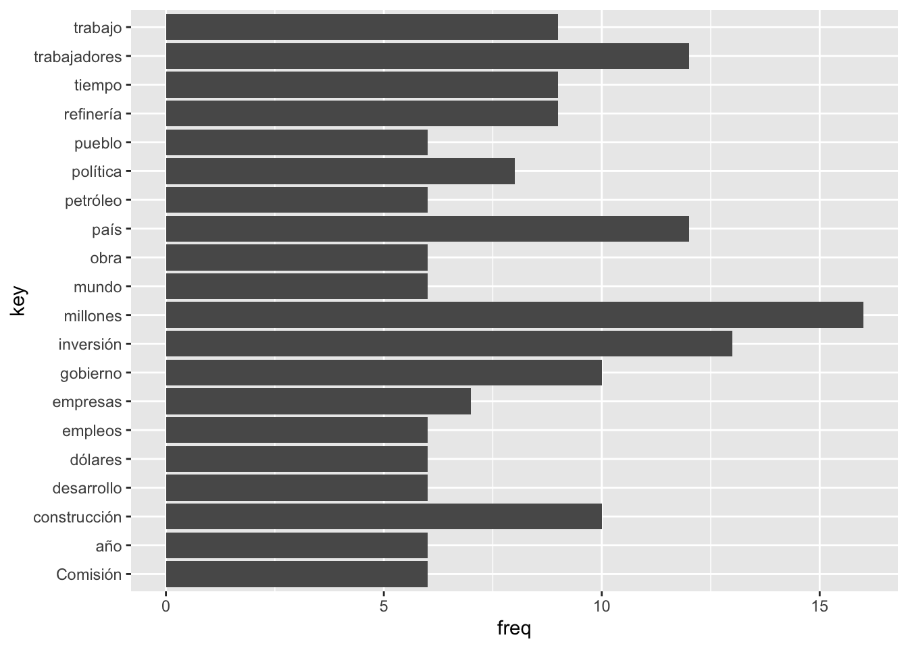
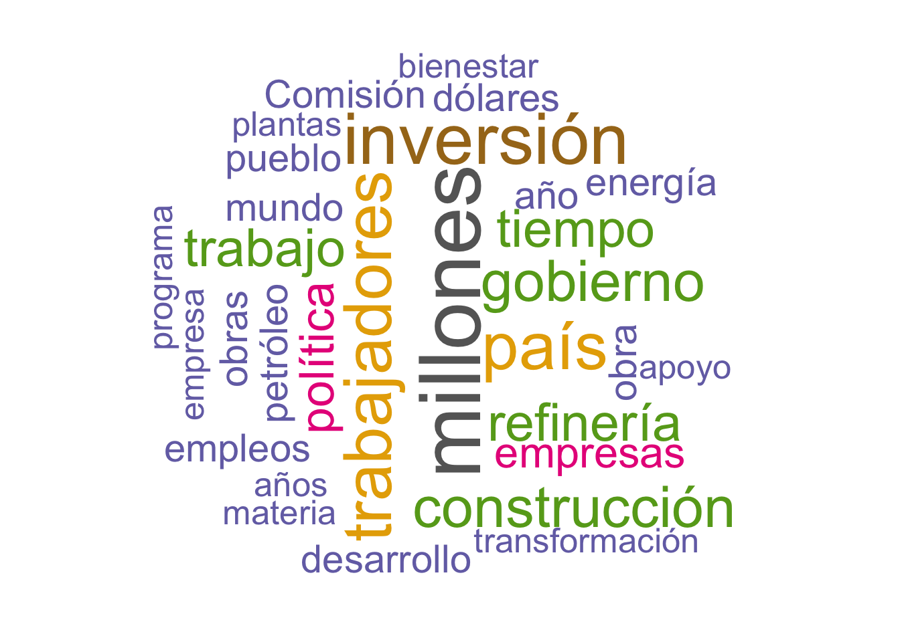
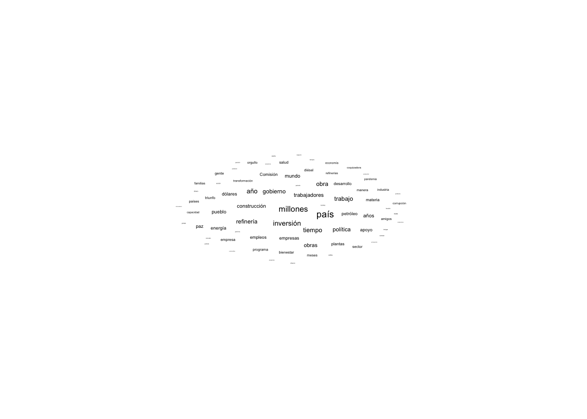

En esta primera práctica veremos algunas acciones para importación de texto para su análisis, así como el manejo de diferentes fuentes, así como importación de tablas desde pdf.
Paquetes
if (!require("pacman")) install.packages("pacman") # instala pacman si se requiere
Tenemos 113 párrafos. Al momento no tenemos más información que lo revisaremos en siguientes secciones
Importar un epub
El proyecto Gutenberg tiene una selección de libros publicados sin problemas de derechos de Autor. Trabajaremos con los Cuentos de Amor de Locura y de Muerte de Horacio Quiroga
epubr::epub_head("text/quiroga.epub") # muestra lo primero
# A tibble: 9 × 2
section text
<chr> <chr>
1 pg-header "The Project Gutenberg eBook of Cuentos de Amor de "
2 id00249 "#LOS OJOS SOMBRIOS#\n\nDespués de las primeras seman"
3 id00535 "#EL INFIERNO ARTIFICIAL#\n\nLas noches en que hay lu"
4 id00745 "#EL PERRO RABIOSO#\n\nEl 20 de marzo de este año, lo"
5 id01047 "#LOS MENSÚ#\n\nCayetano Maidana y Esteban Podeley, p"
6 id01212 "#LOS PESCADORES DE VIGAS#\n\nEl motivo fué cierto ju"
7 id01445 "#LA MENINGITIS Y SU SOMBRA#\n\nNo vuelvo de mi sorpr"
8 pg-footer "*** END OF THIS PROJECT GUTENBERG EBOOK ***\n "
9 coverpage-wrapper ""
Es una selección de cuentos. Revisemos un poco la meta-data:
epubr::epub_meta("text/quiroga.epub") # muestra el meta-data del libro
# A tibble: 1 × 8
rights identifier creator title language subject date source
<chr> <chr> <chr> <chr> <chr> <chr> <chr> <chr>
1 Public domain in the U… http://ww… Horaci… Cuen… es Short … 2004… https…
Hoy sí lo vamos a importar en nuestro ambiente:
x <- epubr::epub("text/quiroga.epub") # Importa todo el libro en el objeto x, pero no queremos todox
# A tibble: 1 × 9
rights identifier creator title language subject date source data
<chr> <chr> <chr> <chr> <chr> <chr> <chr> <chr> <list>
1 Public domain… http://ww… Horaci… Cuen… es Short … 2004… https… <tibble>
¿Dónde están los cuentos?
glimpse(x)
Rows: 1
Columns: 9
$ rights <chr> "Public domain in the USA."
$ identifier <chr> "http://www.gutenberg.org/13507"
$ creator <chr> "Horacio Quiroga"
$ title <chr> "Cuentos de Amor de Locura y de Muerte"
$ language <chr> "es"
$ subject <chr> "Short stories, Uruguayan|Uruguayan fiction"
$ date <chr> "2004-09-20|2022-10-06T21:09:10.400769+00:00"
$ source <chr> "https://www.gutenberg.org/files/13507/13507-8.txt"
$ data <list> [<tbl_df[9 x 4]>]
Vemos que en realidad la última variable es una lista que adentro trae un objeto “tbl_df” de 9 x 4. Revisemos qué hay
class(x$data)
[1] "list"
x$data
[[1]]
# A tibble: 9 × 4
section text nword nchar
<chr> <chr> <int> <int>
1 pg-header "The Project Gutenberg eBook of Cuentos de Amor… 6435 37893
2 id00249 "#LOS OJOS SOMBRIOS#\n\nDespués de las primeras… 5831 34153
3 id00535 "#EL INFIERNO ARTIFICIAL#\n\nLas noches en que … 7190 42642
4 id00745 "#EL PERRO RABIOSO#\n\nEl 20 de marzo de este a… 9356 55680
5 id01047 "#LOS MENSÚ#\n\nCayetano Maidana y Esteban Pode… 6816 40770
6 id01212 "#LOS PESCADORES DE VIGAS#\n\nEl motivo fué cie… 6325 38243
7 id01445 "#LA MENINGITIS Y SU SOMBRA#\n\nNo vuelvo de mi… 7364 43275
8 pg-footer "*** END OF THIS PROJECT GUTENBERG EBOOK ***\n … 2894 18593
9 coverpage-wrapper "" 0 0
Como es una lista, pero una lista de un solo elemento [[1]], vamos a consultarlo:
x$data[[1]]
# A tibble: 9 × 4
section text nword nchar
<chr> <chr> <int> <int>
1 pg-header "The Project Gutenberg eBook of Cuentos de Amor… 6435 37893
2 id00249 "#LOS OJOS SOMBRIOS#\n\nDespués de las primeras… 5831 34153
3 id00535 "#EL INFIERNO ARTIFICIAL#\n\nLas noches en que … 7190 42642
4 id00745 "#EL PERRO RABIOSO#\n\nEl 20 de marzo de este a… 9356 55680
5 id01047 "#LOS MENSÚ#\n\nCayetano Maidana y Esteban Pode… 6816 40770
6 id01212 "#LOS PESCADORES DE VIGAS#\n\nEl motivo fué cie… 6325 38243
7 id01445 "#LA MENINGITIS Y SU SOMBRA#\n\nNo vuelvo de mi… 7364 43275
8 pg-footer "*** END OF THIS PROJECT GUTENBERG EBOOK ***\n … 2894 18593
9 coverpage-wrapper "" 0 0
Esta es nuestra matriz de datos. Aquí podemos elegir una sección. Por ejemplo un cuento
epub<-x$data[[1]]class(epub)
[1] "tbl_df" "tbl" "data.frame"
Vamos a quedarnos con un solo cuento:
ojos_sombrios <- epub %>%filter(section =="id00249") %>%# nos quedamos con el primer cuentoselect(text)ojos_sombrios
# A tibble: 1 × 1
text
<chr>
1 "#LOS OJOS SOMBRIOS#\n\nDespués de las primeras semanas de romper con Elena, …
class(ojos_sombrios)
[1] "tbl_df" "tbl" "data.frame"
Sigue teniendo formato de data.frame. Para poder usar algunos elementos necesitamos convertirlo a texto. Por eso lo vamos a “pegar”
ojos_sombrios<-paste(ojos_sombrios$text) # lo volvemos caracterclass(ojos_sombrios)
[1] "character"
Con esto ya podremos hacer muchas operaciones de aquí en adelante.
[1] " 6 DIARIO OFICIAL Viernes 4 de noviembre de 2022\n\n Con oficio número SEGOB/CNBP/2354/2022, de fecha 12 de agosto de 2022, “LA CNBP” autorizó la\nprocedencia de la solicitud de acceso al recurso concursable, lo anterior, con fundamento en los artículos 21,\n22, 23 y 24 de los “Lineamientos”, y en términos de la Cláusula Vigésima del Convenio de Coordinación\ny Adhesión.\n Por lo que, resulta necesario utilizar la totalidad de los recursos destinados para el otorgamiento de\nsubsidios a las entidades federativas para realizar acciones de búsqueda en materia de desaparición forzada\nde personas y desaparición cometida por particulares.\n DECLARACIONES\n I. “LA CNBP” declara que:\n I.1. En virtud de que el presente Convenio Modificatorio se deriva del Convenio de Coordinación y\n Adhesión, las Declaraciones manifestadas en dicho instrumento permanecen vigentes, con\n excepción de las expresadas en el presente Convenio Modificatorio, por lo que se tienen por\n reproducidas y ratificadas en su integridad como si a la letra se insertaran en el Convenio de\n Coordinación y Adhesión de referencia.\n I.2. Las documentales, justificativas y comprobatorias que acreditan y sustentan la procedencia de este\n instrumento, obran en el expediente de “LA CNBP”; lo anterior, para todos los fines y efectos\n legales a que haya lugar, por lo que corresponde a dicha área cualquier justificación y sustento sobre\n el particular.\n II. La “ENTIDAD FEDERATIVA” declara que:\n II.1. Es su intención celebrar el presente Convenio Modificatorio al Convenio de Coordinación y Adhesión,\n en términos del presente instrumento jurídico.\n II.2. En virtud de que el presente Convenio Modificatorio se deriva del Convenio de Coordinación y\n Adhesión, las declaraciones manifestadas en dicho instrumento permanecen vigentes con excepción\n de las expresadas en el presente Convenio Modificatorio por lo que se tienen por reproducidas\n y ratificadas en su integridad como si a la letra se insertaran en el Convenio de Coordinación y\n Adhesión de referencia, actualizándose las identificadas con los numerales II.4 y II.5, toda vez que\n hubo sustitución de funcionarios, para quedar como sigue.\n II.4. Samuel Sotelo Salgado, Secretario de Gobierno del Poder Ejecutivo Estatal, acredita\n su personalidad con el nombramiento otorgado a su favor por el Gobernador\n Constitucional del Estado con fecha 03 de mayo de 2022, y tiene facultades para\n suscribir el presente Convenio, de conformidad con los artículos 74 de la Constitución\n Política del Estado Libre y Soberano de Morelos; 3, párrafo tercero, 4, fracción I, 9,\n fracción II, 13, fracción VI, 14 y 22, fracción VII, de la Ley Orgánica de la\n Administración Pública del Estado Libre y Soberano de Morelos, y 8 y 9, fracción VII,\n del Reglamento Interior de la Secretaría de Gobierno.\n II.5. José Gerardo López Huérfano, Encargado de Despacho de la Secretaría de Hacienda\n del Estado, acredita su personalidad con el nombramiento otorgado a su favor por el\n Gobernador del Estado con fecha 03 de mayo de 2022, y tiene facultades para\n suscribir el presente Convenio, de conformidad con los artículos 74 de la Constitución\n Política del Estado Libre y Soberano de Morelos; 3, 4, fracción I, 9, fracción III, 13,\n fracción VI, 14, 15 y 23, fracción IV, de la Ley Orgánica de la Administración Pública\n del Estado Libre y Soberano de Morelos, y 11, 12, fracción XII y 41 del Reglamento\n Interior de la Secretaría de Hacienda.\n III. “LAS PARTES” declaran que:\n III.1. Cuentan con las facultades necesarias para intervenir en la suscripción del presente Convenio\n Modificatorio.\n III.2. Se reconocen mutuamente la personalidad con que se ostentan y manifiestan su conformidad para la\n celebración del presente Convenio Modificatorio.\n III.3. Celebran el presente instrumento, de conformidad con lo establecido en los artículos 21, 22, 23,\n 24 y 25 de los “Lineamientos” y en términos de la Cláusula Vigésima del Convenio de Coordinación\n y Adhesión.\n"
class(dof4nov)
[1] "character"
Para verlo mejor podemos usar el comando cat() de base para cada una de las “hojas”
cat(dof4nov[6])
6 DIARIO OFICIAL Viernes 4 de noviembre de 2022
Con oficio número SEGOB/CNBP/2354/2022, de fecha 12 de agosto de 2022, “LA CNBP” autorizó la
procedencia de la solicitud de acceso al recurso concursable, lo anterior, con fundamento en los artículos 21,
22, 23 y 24 de los “Lineamientos”, y en términos de la Cláusula Vigésima del Convenio de Coordinación
y Adhesión.
Por lo que, resulta necesario utilizar la totalidad de los recursos destinados para el otorgamiento de
subsidios a las entidades federativas para realizar acciones de búsqueda en materia de desaparición forzada
de personas y desaparición cometida por particulares.
DECLARACIONES
I. “LA CNBP” declara que:
I.1. En virtud de que el presente Convenio Modificatorio se deriva del Convenio de Coordinación y
Adhesión, las Declaraciones manifestadas en dicho instrumento permanecen vigentes, con
excepción de las expresadas en el presente Convenio Modificatorio, por lo que se tienen por
reproducidas y ratificadas en su integridad como si a la letra se insertaran en el Convenio de
Coordinación y Adhesión de referencia.
I.2. Las documentales, justificativas y comprobatorias que acreditan y sustentan la procedencia de este
instrumento, obran en el expediente de “LA CNBP”; lo anterior, para todos los fines y efectos
legales a que haya lugar, por lo que corresponde a dicha área cualquier justificación y sustento sobre
el particular.
II. La “ENTIDAD FEDERATIVA” declara que:
II.1. Es su intención celebrar el presente Convenio Modificatorio al Convenio de Coordinación y Adhesión,
en términos del presente instrumento jurídico.
II.2. En virtud de que el presente Convenio Modificatorio se deriva del Convenio de Coordinación y
Adhesión, las declaraciones manifestadas en dicho instrumento permanecen vigentes con excepción
de las expresadas en el presente Convenio Modificatorio por lo que se tienen por reproducidas
y ratificadas en su integridad como si a la letra se insertaran en el Convenio de Coordinación y
Adhesión de referencia, actualizándose las identificadas con los numerales II.4 y II.5, toda vez que
hubo sustitución de funcionarios, para quedar como sigue.
II.4. Samuel Sotelo Salgado, Secretario de Gobierno del Poder Ejecutivo Estatal, acredita
su personalidad con el nombramiento otorgado a su favor por el Gobernador
Constitucional del Estado con fecha 03 de mayo de 2022, y tiene facultades para
suscribir el presente Convenio, de conformidad con los artículos 74 de la Constitución
Política del Estado Libre y Soberano de Morelos; 3, párrafo tercero, 4, fracción I, 9,
fracción II, 13, fracción VI, 14 y 22, fracción VII, de la Ley Orgánica de la
Administración Pública del Estado Libre y Soberano de Morelos, y 8 y 9, fracción VII,
del Reglamento Interior de la Secretaría de Gobierno.
II.5. José Gerardo López Huérfano, Encargado de Despacho de la Secretaría de Hacienda
del Estado, acredita su personalidad con el nombramiento otorgado a su favor por el
Gobernador del Estado con fecha 03 de mayo de 2022, y tiene facultades para
suscribir el presente Convenio, de conformidad con los artículos 74 de la Constitución
Política del Estado Libre y Soberano de Morelos; 3, 4, fracción I, 9, fracción III, 13,
fracción VI, 14, 15 y 23, fracción IV, de la Ley Orgánica de la Administración Pública
del Estado Libre y Soberano de Morelos, y 11, 12, fracción XII y 41 del Reglamento
Interior de la Secretaría de Hacienda.
III. “LAS PARTES” declaran que:
III.1. Cuentan con las facultades necesarias para intervenir en la suscripción del presente Convenio
Modificatorio.
III.2. Se reconocen mutuamente la personalidad con que se ostentan y manifiestan su conformidad para la
celebración del presente Convenio Modificatorio.
III.3. Celebran el presente instrumento, de conformidad con lo establecido en los artículos 21, 22, 23,
24 y 25 de los “Lineamientos” y en términos de la Cláusula Vigésima del Convenio de Coordinación
y Adhesión.
Importar una imagen con texto con {tesseract}
El paquete {tesseract} …
“utiliza datos de entrenamiento para realizar OCR. La mayoría de los sistemas utilizan de forma predeterminada los datos de entrenamiento en inglés”. Para mejorar el rendimiento de OCR para otros idiomas, puede instalar los datos de entrenamiento de su distribución… En Windows y MacOS, puede instalar idiomas mediante la función tesseract_download, que descarga datos de entrenamiento directamente desde github y los almacena en la ruta del disco…” (traducido de la viñeta)
if(is.na(match("spa", tesseract::tesseract_info()$available))) tesseract::tesseract_download("spa") # baja el entrenamiento para españolspa <- tesseract::tesseract("spa") # aquí este será el "engine"text <- tesseract::ocr("text/texto1.png", #ruta donde está la imagenengine = spa) # que lo lea en españolcat(text)
NOTA
Las denominaciones empleadas en esta publicación y la forma en que aparecen
presentados los datos que contiene no implican, de parte de la Secretaría de las
Naciones Unidas, juicio alguno sobre la condición jurídica de ninguno de los países o
territorios citados o de sus autoridades, ni respecto de la delimitación de sus fronte-
ras O límites.
En algunos cuadros, las designaciones economías “desarrolladas” y “en
desarrollo”? se emplean por razones estadísticas y no expresan necesariamente juicio
alguno sobre la etapa alcanzada por un determinado país o zona en el proceso de
desarrollo,
El término “país” usado en el texto de esta publicación también se refiere, cuan-
do proceda, a territorios o áreas.
Los puntos de vista que se exponen en esta publicación son los de sus respectivos
autores y no entrañan la manifestación de opinión alguna por parte de la Secretaría
de las Naciones Unidas.
Esta publicación ha sido preparada y refundida con arreglo a la práctica y
requerimientos de las Naciones Unidas.
Las signaturas de los documentos de las Naciones Unidas se componen de letras
mayúsculas y cifras. La mención de una de tales signaturas indica que se hace
referencia a un documento de las Naciones Unidas.
{stringr} Limpieza de variables de cadena
stringr::str_squish(text)
[1] "NOTA Las denominaciones empleadas en esta publicación y la forma en que aparecen presentados los datos que contiene no implican, de parte de la Secretaría de las Naciones Unidas, juicio alguno sobre la condición jurídica de ninguno de los países o territorios citados o de sus autoridades, ni respecto de la delimitación de sus fronte- ras O límites. En algunos cuadros, las designaciones economías “desarrolladas” y “en desarrollo”? se emplean por razones estadísticas y no expresan necesariamente juicio alguno sobre la etapa alcanzada por un determinado país o zona en el proceso de desarrollo, El término “país” usado en el texto de esta publicación también se refiere, cuan- do proceda, a territorios o áreas. Los puntos de vista que se exponen en esta publicación son los de sus respectivos autores y no entrañan la manifestación de opinión alguna por parte de la Secretaría de las Naciones Unidas. Esta publicación ha sido preparada y refundida con arreglo a la práctica y requerimientos de las Naciones Unidas. Las signaturas de los documentos de las Naciones Unidas se componen de letras mayúsculas y cifras. La mención de una de tales signaturas indica que se hace referencia a un documento de las Naciones Unidas."
nota<-stringr::str_split_fixed(text, "\n\n", n=10) ## por párrafosnota
[,1]
[1,] "NOTA"
[,2]
[1,] "Las denominaciones empleadas en esta publicación y la forma en que aparecen\npresentados los datos que contiene no implican, de parte de la Secretaría de las\nNaciones Unidas, juicio alguno sobre la condición jurídica de ninguno de los países o\nterritorios citados o de sus autoridades, ni respecto de la delimitación de sus fronte-\nras O límites."
[,3]
[1,] "En algunos cuadros, las designaciones economías “desarrolladas” y “en\ndesarrollo”? se emplean por razones estadísticas y no expresan necesariamente juicio\nalguno sobre la etapa alcanzada por un determinado país o zona en el proceso de\ndesarrollo,"
[,4]
[1,] "El término “país” usado en el texto de esta publicación también se refiere, cuan-\ndo proceda, a territorios o áreas."
[,5]
[1,] "Los puntos de vista que se exponen en esta publicación son los de sus respectivos\nautores y no entrañan la manifestación de opinión alguna por parte de la Secretaría\nde las Naciones Unidas."
[,6]
[1,] "Esta publicación ha sido preparada y refundida con arreglo a la práctica y\nrequerimientos de las Naciones Unidas."
[,7]
[1,] "Las signaturas de los documentos de las Naciones Unidas se componen de letras\nmayúsculas y cifras. La mención de una de tales signaturas indica que se hace\nreferencia a un documento de las Naciones Unidas.\n"
[,8] [,9] [,10]
[1,] "" "" ""
stringr::str_count(text, "\n\n")
[1] 6
nota<-stringr::str_split_fixed(text,pattern="\n\n", n=str_count(text, "\n\n")+1) ## por párrafosnota
[,1]
[1,] "NOTA"
[,2]
[1,] "Las denominaciones empleadas en esta publicación y la forma en que aparecen\npresentados los datos que contiene no implican, de parte de la Secretaría de las\nNaciones Unidas, juicio alguno sobre la condición jurídica de ninguno de los países o\nterritorios citados o de sus autoridades, ni respecto de la delimitación de sus fronte-\nras O límites."
[,3]
[1,] "En algunos cuadros, las designaciones economías “desarrolladas” y “en\ndesarrollo”? se emplean por razones estadísticas y no expresan necesariamente juicio\nalguno sobre la etapa alcanzada por un determinado país o zona en el proceso de\ndesarrollo,"
[,4]
[1,] "El término “país” usado en el texto de esta publicación también se refiere, cuan-\ndo proceda, a territorios o áreas."
[,5]
[1,] "Los puntos de vista que se exponen en esta publicación son los de sus respectivos\nautores y no entrañan la manifestación de opinión alguna por parte de la Secretaría\nde las Naciones Unidas."
[,6]
[1,] "Esta publicación ha sido preparada y refundida con arreglo a la práctica y\nrequerimientos de las Naciones Unidas."
[,7]
[1,] "Las signaturas de los documentos de las Naciones Unidas se componen de letras\nmayúsculas y cifras. La mención de una de tales signaturas indica que se hace\nreferencia a un documento de las Naciones Unidas.\n"
stringr::str_squish(nota)
[1] "NOTA"
[2] "Las denominaciones empleadas en esta publicación y la forma en que aparecen presentados los datos que contiene no implican, de parte de la Secretaría de las Naciones Unidas, juicio alguno sobre la condición jurídica de ninguno de los países o territorios citados o de sus autoridades, ni respecto de la delimitación de sus fronte- ras O límites."
[3] "En algunos cuadros, las designaciones economías “desarrolladas” y “en desarrollo”? se emplean por razones estadísticas y no expresan necesariamente juicio alguno sobre la etapa alcanzada por un determinado país o zona en el proceso de desarrollo,"
[4] "El término “país” usado en el texto de esta publicación también se refiere, cuan- do proceda, a territorios o áreas."
[5] "Los puntos de vista que se exponen en esta publicación son los de sus respectivos autores y no entrañan la manifestación de opinión alguna por parte de la Secretaría de las Naciones Unidas."
[6] "Esta publicación ha sido preparada y refundida con arreglo a la práctica y requerimientos de las Naciones Unidas."
[7] "Las signaturas de los documentos de las Naciones Unidas se componen de letras mayúsculas y cifras. La mención de una de tales signaturas indica que se hace referencia a un documento de las Naciones Unidas."
[1] "NOTA"
[2] "Las denominaciones empleadas en esta publicación y la forma en que aparecen presentados los datos que contiene no implican, de parte de la Secretaría de las Naciones Unidas, juicio alguno sobre la condición jurídica de ninguno de los países o territorios citados o de sus autoridades, ni respecto de la delimitación de sus fronteras O límites."
[3] "En algunos cuadros, las designaciones economías “desarrolladas” y “en desarrollo”? se emplean por razones estadísticas y no expresan necesariamente juicio alguno sobre la etapa alcanzada por un determinado país o zona en el proceso de desarrollo,"
[4] "El término “país” usado en el texto de esta publicación también se refiere, cuando proceda, a territorios o áreas."
[5] "Los puntos de vista que se exponen en esta publicación son los de sus respectivos autores y no entrañan la manifestación de opinión alguna por parte de la Secretaría de las Naciones Unidas."
[6] "Esta publicación ha sido preparada y refundida con arreglo a la práctica y requerimientos de las Naciones Unidas."
[7] "Las signaturas de los documentos de las Naciones Unidas se componen de letras mayúsculas y cifras. La mención de una de tales signaturas indica que se hace referencia a un documento de las Naciones Unidas."
Más operaciones con cadenas con {stringr} y {tokenizers}
Ya vimos el conteo de algunos patrones y cómo podemos quitar algunos. Trabajemos con el cuento de Quiroga, que también está un poco sucio, y veamos como podemos seguir utilizando el formato tidy
De los 113 párrafos tenemos varios que están en 0. Vamos a eliminarlos. Vemos que txt reconoció los párrafos sin problemas, sin necesidad de poner la marca de párrafo
Las palabras tienen un papel en el lenguaje, por lo cual muchas veces la unidad que usaremos será esa. Uno de los primeros pasos para el análisis de texto será descomponer nuestros textos en palabras.
Tokenización con {tidytext}
Para usar {tidytext}, necesitamos que nuestro texto esté en formato tibble:
amlo_df <-tibble(text=amlo)
A partir de esto podemos pasar al proceso de tokenización:
amlo_df %>%unnest_tokens(word, text)
# A tibble: 4,056 × 1
word
<chr>
1 amigas
2 y
3 amigos
4 invitados
5 especiales
6 presidentes
7 municipales
8 presidentas
9 municipales
10 gobernadores
# ℹ 4,046 more rows
word n percent
de 260 0.06410256
la 179 0.04413215
y 145 0.03574951
en 134 0.03303748
el 124 0.03057199
que 120 0.02958580
a 84 0.02071006
se 83 0.02046351
los 59 0.01454635
es 53 0.01306706
Importa el tipo de palabra!!! En muchos idiomas las preposiciones y determinantes son bastante comunes. Hay varios diccionarios, incluso los podemos modificar. Para este ejercicio utilizaremos las palabras comunes del paquete {quanteda}
amlo_df %>% tidytext::unnest_tokens(word, text) %>%filter(!word%in%stop) %>%# ojo con el filtrotabyl(word) %>%arrange(-n) %>%head(10)
word n percent
mil 29 0.014521783
millones 16 0.008012018
ciento 15 0.007511267
inversión 13 0.006509765
aquí 12 0.006009014
méxico 12 0.006009014
país 12 0.006009014
trabajadores 12 0.006009014
gobierno 11 0.005508262
construcción 10 0.005007511
udmodel <-udpipe_download_model(language ="spanish") # esto trabaja con la estructura del español
Downloading udpipe model from https://raw.githubusercontent.com/jwijffels/udpipe.models.ud.2.5/master/inst/udpipe-ud-2.5-191206/spanish-gsd-ud-2.5-191206.udpipe to /Users/anaescoto/Dropbox/2023/PAPIME2023/demos/spanish-gsd-ud-2.5-191206.udpipe
- This model has been trained on version 2.5 of data from https://universaldependencies.org
- The model is distributed under the CC-BY-SA-NC license: https://creativecommons.org/licenses/by-nc-sa/4.0
- Visit https://github.com/jwijffels/udpipe.models.ud.2.5 for model license details.
- For a list of all models and their licenses (most models you can download with this package have either a CC-BY-SA or a CC-BY-SA-NC license) read the documentation at ?udpipe_download_model. For building your own models: visit the documentation by typing vignette('udpipe-train', package = 'udpipe')
Downloading finished, model stored at '/Users/anaescoto/Dropbox/2023/PAPIME2023/demos/spanish-gsd-ud-2.5-191206.udpipe'
Vamos a “tokenizar” el discurso de AMLO:
amlo_udpipe<-udpipe(x =amlo, object=udmodel) #"tokeniza" el texto
Además de separarnos las palabras, también distingue puntuación (por eso tiene más líneas que las palabras), pero también nos da las “Universal POS tags”, donde POS=part-of-speech, que están en la variable “upos”
token n percent
Al 1 0.01587302
agregarse 2 0.03174603
al 21 0.33333333
darle 1 0.01587302
dedicarse 1 0.01587302
del 35 0.55555556
haciéndole 1 0.01587302
venderlos 1 0.01587302
La clasificación de las UPOS nos permite hacer filtro por el tipo de palabra que queremos analizar, seguro los sustantivos son los que más queremos revisar:
token n percent
millones 16 0.017997750
inversión 13 0.014623172
país 12 0.013498313
trabajadores 12 0.013498313
construcción 10 0.011248594
gobierno 10 0.011248594
refinería 9 0.010123735
tiempo 9 0.010123735
trabajo 9 0.010123735
política 8 0.008998875
Además de los “tokens” podemos pedirles los “lemma”, que como vemos quita el género y el número
lemma n percent
millón 19 0.02137233
país 16 0.01799775
inversión 13 0.01462317
refinería 13 0.01462317
empresa 12 0.01349831
gobierno 12 0.01349831
obra 12 0.01349831
tiempo 12 0.01349831
trabajador 12 0.01349831
año 11 0.01237345
Estadísticas de las palabras
Tenemos que una función en {udpipe} que se llama txt_freq(), es como un tabulado, pero nos da la frecuencia ordenada de mayor a m enor y los porcentajes relativos
amlo_udpipe %>%filter(upos=="NOUN") %>%# nos vamos a quedar ahorita solo con los nombreswith(txt_freq(token) # ojo hay que poner el with, porque no es formato tidy el comando ) %>%head(10) # elegir número
key freq freq_pct
1 millones 16 1.7997750
2 inversión 13 1.4623172
3 país 12 1.3498313
4 trabajadores 12 1.3498313
5 gobierno 10 1.1248594
6 construcción 10 1.1248594
7 refinería 9 1.0123735
8 tiempo 9 1.0123735
9 trabajo 9 1.0123735
10 política 8 0.8998875
Utilizando {ggplot2}, una vez que tenemos esta tabla, podemos hacer una gráfica
amlo_udpipe %>%filter(upos=="NOUN") %>%# nos vamos a quedar ahorita solo con los nombreswith(txt_freq(token) # ojo hay que poner el with, porque no es formato tidy el comando ) %>%head(20) %>%# me voy a quedar con las primeras 20 palabrasggplot()+aes(x=key, y=freq) +geom_bar(stat ="identity") +coord_flip()

Pero no está ordenado ….
amlo_udpipe %>%filter(upos=="NOUN") %>%# nos vamos a quedar ahorita solo con los nombreswith(txt_freq(token) # ojo hay que poner el with, porque no es formato tidy el comando ) %>%head(20) %>%# me voy a quedar con las primeras 20 palabrasmutate(key = forcats::fct_reorder(key, freq)) %>%# aquí ordeno de acuerdo a las frecuenciasggplot() +# aquí ya empieza el gráficoaes(x=key, y=freq) +geom_bar(stat ="identity", fill="blue", alpha=I(0.5)) +coord_flip() +theme_minimal() +labs(x="Sustantivos", y="Frecuencia")
Comparando tokens, palabras y más
Para comparar mejor, descargamos otro discurso:
amlo2 <-readLines("text/20220916_amlo.txt") count2<-tokenizers::count_words(amlo2) amlo2<-amlo2[!count2==0] amlo2_udpipe<-udpipe(x =amlo2, object=udmodel) #"tokeniza" el texto
Podemos revisar qué tanto se pueden comparar estos textos utilizando {udpipe}
Esta función nos da todas las palabras(o lemmas) comunes a ambos textos.
Nubes de palabras
Otra forma muy común para presentar cuántas palabras hay y su frecuencia son las nubes de palabras
Lo primero es que quizas sea más fácil tener un objeto con los conteos de palabras que encontramos usando txt_frq
df_nube<-amlo_udpipe %>%filter(upos=="NOUN") %>%# nos vamos a quedar ahorita solo con los nombreswith(txt_freq(token) # ojo hay que poner el with, porque no es formato tidy el comando )
O si queremos usar todas las palabras independientemente de su función, podemos utilizar las palabras stop:
df_nube2<-amlo_df %>%unnest_tokens(word,text) %>%filter(!word%in%stop) %>%# ojo con el filtrotabyl(word) df_nube2 %>%head(10)
set.seed(1234) # ojo es importante para que se vea siempre igual. Pero no es grave si no se ponewordcloud::wordcloud(words =df_nube$key, # columna donde se listan las palabrasfreq = df_nube$freq, # columna donde están las frecuenciasmin.freq =5, # valor mínimo para incluirlamax.words=200, #Máximo de palabrasrandom.order=FALSE, #plot words in random order. If false, they will be plotted in decreasing frequencyrot.per=0.35, # proportion words with 90 degree rotationcolors=brewer.pal(8, "Dark2") # paleta de colores, aquí usamos uno de RColorBrewer )

Nube con {ggwordcloud}
Ya conocemos bastante el formato tidy, y sabemos de las ventajas de que nuestros gráficos sean ggplot
Aquí las estéticas que tenemos son “label” = columna donde están están las palabraas
df_palabras %>%
ggplot(
aes(label= variable donde están las palabras,
size = variable donde está la frecuencia))+
geom_text_wordcloud # la geometría especial.
df_nube %>%filter(freq>2) %>%# hacemos un filtro porque muchas no se ven bienggplot()+aes(label=key,size=freq) +geom_text_wordcloud() +theme_minimal()
df_nube %>%filter(freq>2) %>%# hacemos un filtro porque muchas no se ven bienggplot()+aes(label=key,size=freq) +geom_text_wordcloud_area() +theme_minimal()

Se ve igual… dice la ayuda
geom_text_wordcloud_area is an alias with a different set of default, that chooses a font size so that the area of the text is now related to the size aesthetic.
No se ve tan divertida….
Una de las cosas que hacía bonita a nuestra primera nube era el elemento aleatorio. Para ello vamos a necesitar saber cuántas filas tenemos
df_nube %>%filter(freq>2) %>%dim()
[1] 76 3
set.seed(1234)df_nube %>%filter(freq>2) %>%# hacemos un filtro porque muchas no se ven bienggplot() +aes(label =key, size = freq,color =factor(sample.int(10, 76, replace =TRUE)) # elegirá 10 colores aleatorios entre las 76 palabras ) +geom_text_wordcloud_area() +scale_size_area(max_size =8) +theme_minimal()